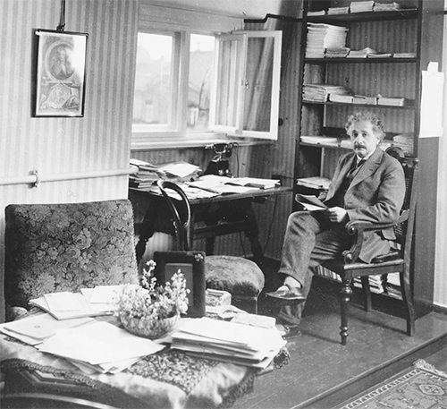

Trong phòng làm việc tại nhà ông ở Berlin
Vũ trụ học là ngành nghiên cứu toàn bộ vũ trụ, bao gồm kích thước và hình dạng, lịch sử và vận mệnh, từ đầu này tới đầu kia, từ khởi đầu cho đến kết thúc của vũ trụ. Đó là một đề tài lớn không hề đơn giản. Thậm chí chẳng dễ gì xác định được những khái niệm đó có nghĩa là gì, hoặc liệu chúng có nghĩa hay không. Bằng các phương trình trường hấp dẫn trong Thuyết Tương đối rộng của mình, Einstein đã đặt nền móng cho việc nghiên cứu bản chất của vũ trụ, và ông trở thành một trong những người sáng lập ngành vũ trụ học hiện đại.
Giúp đỡ ông trong nỗ lực này, ít nhất là trong những giai đoạn đầu, là một nhà toán học uyên thâm và cũng là vật lý thiên văn xuất sắc, Karl Schwarzschild94, người điều hành đài quan sát Potsdam. Schwarzschild đã đọc bài trình bày mới của Einstein về Thuyết Tương đối rộng, và vào đầu năm 1916, bắt đầu tìm cách áp dụng nó cho các đối tượng trong không gian.
Có một điều khiến công việc của Schwarzschild rất khó tiến hành. Ông đã tình nguyện tham gia quân đội Đức trong chiến tranh, và khi đọc các bài báo của Einstein thì ông đang đóng quân ở Nga, với nhiệm vụ xác định đường phóng đạn pháo. Nhưng ông vẫn dành được thời gian để thực hiện các tính toán xem trường hấp dẫn quanh một vật thể trong không gian sẽ là bao nhiêu, theo lý thuyết của Einstein. Đó là một “Einstein thời chiến”, cũng giống Einstein thuở đưa ra Thuyết Tương đối hẹp trong khi vẫn làm công việc kiểm định các đơn xin cấp bằng sáng chế cho sự đồng bộ hóa của đồng hồ.
Vào tháng Một năm 1916, Schwarzschild gửi kết quả cho Einstein với lời tuyên bố rằng nó giúp lý thuyết của Einstein “tỏa sáng một cách thuần khiết hơn nữa”. Cùng với những điều khác, nó tái khẳng định ở mức chính xác cao hơn nữa thành công của các phương trình giải thích quỹ đạo sao Thủy trong lý thuyết của Einstein. Einstein xúc động. Ông trả lời: “Tôi đã không nghĩ rằng lời giải chính xác cho vấn đề này có thể hiển thị bằng công thức một cách đơn giản như vậy.” Thứ năm tuần sau đó, ông trực tiếp trình bày bài báo này tại cuộc họp hằng tuần của Viện Hàn lâm Phổ.
Những tính toán ban đầu của Shwarzschild tập trung vào độ cong của không – thời gian bên ngoài tinh cầu không quay. Một vài tuần sau đó, ông gửi cho Einstein một bài báo khác về việc bên trong tinh cầu đó có gì xảy ra.
Trong cả hai trường hợp, điều bất thường dường như có thể xảy ra, thật ra là không thể tránh khỏi. Nếu toàn bộ khối lượng của một ngôi sao (hoặc bất kỳ vật nào) bị nén thành một không gian đủ nhỏ – được xác định bằng bán kính Schwarzschild – thì tất cả các tính toán đó dường như sụp đổ. Ở tâm, không – thời gian sẽ cong vô hạn vào chính nó. Đối với Mặt trời của chúng ta, điều đó sẽ xảy ra nếu toàn bộ khối lượng của nó bị nén trong một bán kính dưới hai dặm. Còn với Trái đất, điều đó sẽ xảy ra nếu toàn bộ khối lượng của nó bị nén trong một bán kính có độ dài vào khoảng 1/3 inch.
Điều đó có nghĩa là gì? Trong tình huống như thế, không có gì bên trong bán kính Schwarzschild có thể thoát khỏi lực hút hấp dẫn, kể cả ánh sáng hay bất cứ dạng phát xạ nào. Thời gian cũng sẽ là một phần của khối cầu đó, và giãn tới 0. Nói cách khác, một người gần đường kính Schwarzschild dường như đang đông cứng tại một chỗ, so với người ở ngoài.
Einstein không tin, hoặc khi đó hoặc sau này, rằng những kết quả này thật sự tương ứng với những hiện tượng có thật. Chẳng hạn, vào năm 1939, ông nói rằng ông đã viết một bài báo đưa ra một “lý giải chỉ rõ tại sao những ‘kỳ dị Schwarzschild’95 này không tồn tại trong thực tại vật lý”. Tuy nhiên, vài tháng sau, J. Robert Oppenheimer96 và sinh viên của ông là Hartland Snyder97 lập luận điều ngược lại, dự đoán rằng các ngôi sao có thể trải qua một sự suy sụp hấp dẫn.
Về phần Schwarzschild, ông không có cơ hội nghiên cứu vấn đề này sâu hơn. Vài tuần sau khi viết các bài báo, ông mắc phải bệnh tự miễn dịch98 khủng khiếp ngoài mặt trận, bệnh này ăn mất tế bào da của ông, khiến ông qua đời vào tháng Năm ở tuổi 42.
Phải sau khi Einstein qua đời, các nhà khoa học mới chứng minh được lý thuyết kỳ lạ của Schwarzschild là đúng. Các ngôi sao có thể suy sụp và tạo ra một hiện tượng như thế, thực tế đúng là như vậy. Vào những năm 1960, các nhà vật lý như Stephen Hawking, Roger Penrose99, John Wheeler, Freeman Dyson và Kip Thorne đã chứng tỏ rằng đây quả thực là một đặc điểm của Thuyết Tương đối rộng của Einstein, một đặc điểm rất thực. Wheeler gọi chúng là những “lỗ đen”, và chúng là một bộ phận của vũ trụ học, như ta có thể xem được trong loạt phim Star Treck kể từ đó trở đi.
Những lỗ đen giờ đã được phát hiện trên khắp vũ trụ, trong đó có một lỗ đen ở trung tâm dải ngân hà của chúng ta, nó nặng gấp vài triệu lần Mặt trời. Dyson nói: “Các lỗ đen không hiếm, và chúng không phải là một sự tô điểm ngẫu nhiên trong vũ trụ. Chúng là nơi đáng xem nhất trong vũ trụ để thấy Thuyết Tương đối của Einstein thể hiện trọn vẹn sức mạnh và hào quang của nó. Tại đó, chứ không phải ở bất cứ nơi nào khác, không gian và thời gian mất đi tính độc lập và hợp vào nhau trong một cấu trúc bốn chiều rất cong như được phác họa chính xác bằng các phương trình của Einstein.”
Einstein tin rằng Thuyết Tương đối rộng của ông giải quyết được vấn đề cái xô của Newton như cách mà Mach muốn: quán tính (hay lực ly tâm) không tồn tại đối với vật quay tròn trong một vũ trụ hoàn toàn trống rỗng100. Thay vào đó, quán tính sinh ra do chuyển động quay tương đối so với tất cả các vật thể khác trong vũ trụ. Einstein viết cho Schwarzschild: “Theo lý thuyết của tôi, quán tính đơn thuần là tương tác giữa các khối lượng chứ không phải một hiệu ứng mà ‘không gian’ tự nó tham gia và độc lập với khối lượng quan sát được. Có thể nói thế này. Theo Newton, nếu mọi vật biến mất thì không gian quán tính Galileo vẫn còn đó. Tuy nhiên, theo cách diễn giải của tôi thì không còn lại gì cả.”
Vấn đề quán tính làm Einstein rơi vào một cuộc tranh luận với một trong những nhà thiên văn học vĩ đại thời đó, Willem de Sitter101 ở Leiden. Trong suốt năm 1916, Einstein nỗ lực bảo toàn tính tương đối của quán tính và nguyên lý của Mach bằng cách viện đến tất cả các kiểu khái niệm, bao gồm việc giả định nhiều “điều kiện biên”, chẳng hạn các khối lượng ở xa dọc theo các vân không gian không thể quan sát được. Như de Sitter viết, bản thân điều này là một lời nguyền rủa Mach, vốn phản đối việc đặt ra những điều không thể quan sát được.
Vào tháng Hai năm 1917, Einstein đưa ra một phương pháp mới. Ông viết cho de Sitter: “Tôi đã hoàn toàn từ bỏ quan điểm trước đây, những quan điểm mà anh đã đúng khi nghi ngờ. Tôi tò mò muốn nghe anh sẽ nói gì về ý tưởng có phần điên rồ mà tôi đang cân nhắc lúc này.” Đó là ý tưởng mà ban đầu ông thấy e ngại đến mức nói với người bạn Paul Ehrenfest ở Leiden: “Nó khiến tôi có nguy cơ bị giam vào nhà thương điên.” Ông nói đùa với Ehrenfest rằng hãy bảo đảm trước khi ông đến thăm là không có những nhà thương điên như thế ở Leiden.
Ý tưởng mới được ông công bố vào tháng đó trong một bài báo quan trọng: “Các xem xét vũ trụ học trong Thuyết Tương đối rộng”. Bề ngoài, nó quả thật có vẻ dựa trên một ý niệm điên rồ: không gian không có biên vì lực hấp dẫn bẻ cong nó vào lại chính nó.
Einstein mở đầu rằng không thể có một vũ trụ vô hạn tuyệt đối đầy những ngôi sao và những vật thể. Có vô số lực hấp dẫn đang kéo mạnh tại mọi điểm, và có vô số ánh sáng chiếu từ mọi hướng. Nhưng mặt khác, một vũ trụ hữu hạn lơ lửng ở một vị trí ngẫu nhiên nào đó trong vũ trụ cũng không thể quan niệm được. Ngoài những điều ta có thể biết thì điều gì đã giữ cho các ngôi sao và năng lượng không bay đi, thoát ra và làm cho vũ trụ trống rỗng?
Ông đưa ra một mô hình thứ ba: một vũ trụ hữu hạn nhưng không có đường biên. Các khối lượng trong vũ trụ khiến cho không gian cong, và trong tiến trình giãn nở của vũ trụ chúng khiến cho không gian (thực tế là toàn bộ kết cấu bốn chiều của không thời gian) cong vòng vào chính nó. Hệ này kín, hữu hạn nhưng không có điểm kết thúc hay đường biên nào.
Một phương pháp mà Einstein vận dụng để giúp mọi người mường tượng được khái niệm này là bắt đầu bằng cách tưởng tượng ra những nhà thám hiểm hai chiều trên một vũ trụ hai chiều, như một bề mặt phẳng. “Những người đáp xuống mặt phẳng” có thể đi theo bất cứ hướng nào trên mặt phẳng đó, tuy nhiên khái niệm đi lên hay đi xuống không có ý nghĩa gì đối với họ.
Giờ hãy tưởng tượng sự thay đổi sau: Nếu họ đáp xuống một bề mặt hơi cong một chút (theo một cách rất khó phát hiện đối với họ) thì sao? Nếu họ và thế giới của họ vẫn bị giới hạn trong hai chiều nhưng mặt phẳng của họ giống như mặt cầu thì sao? Như Einstein nói: “Bây giờ, chúng ta hãy xét sự tồn tại hai chiều nhưng là trên một mặt cầu thay vì trên một mặt phẳng.” Mũi tên được những người đáp xuống này bắn đi dường như vẫn chuyển động theo đường thẳng, nhưng cuối cùng nó sẽ bay theo đường cong vòng và quay lại – giống như một người thủy thủ trên bề mặt của hành tinh chúng ta thẳng tiến ra biển thì cuối cùng sẽ quay lại điểm xuất phát từ chân trời bên kia.
Độ cong không gian hai chiều của những người đáp xuống mặt phẳng là hữu hạn, thế nhưng họ không thể thấy đường biên nào. Bất kể họ đi theo hướng nào, họ cũng không tới được điểm cuối hay đường biên của vũ trụ, cuối cùng họ luôn quay trở lại đúng vị trí cũ. Như Einstein đã nói: “Điểm hấp dẫn tuyệt vời có được từ sự xem xét này nằm ở việc thừa nhậnvũ trụ của những người này là hữu hạn nhưng không có giới hạn”. Và nếu bề mặt của những người đáp xuống mặt phẳng giống như quả bóng được bơm căng thì toàn bộ vũ trụ sẽ giãn nở nhưng vẫn không có đường biên nào cả.
Bằng cách hình dung sự giãn nở đó, như Einstein nói với chúng ta, chúng ta có thể tưởng tượng không gian ba chiều có thể cong tương tự như thế nào để tạo ra một hệ kín và hữu hạn nhưng không có đường biên. Đối với chúng ta, những sinh vật sống trong ba chiều, thật khó hình dung, nhưng nó được mô tả dễ dàng về mặt toán học bằng hình học phi Euclid do Gauss và Riemann tiên phong. Nó cũng có thể áp dụng cho bốn chiều không-thời gian.
Trong một vũ trụ cong như thế, một tia sáng phát ra theo bất cứ hướng dường như sẽ đi theo một đường thẳng nhưng vẫn quay vòng lại chính nó. Nhà vật lý Max Born từng tuyên bố: “Gợi ý về một không gian hữu hạn nhưng không có biên này là một trong những ý tưởng vĩ đại nhất về bản chất của thế giới từng được đưa ra.”
Đúng, thế nhưng cái gì sẽ ở ngoài vũ trụ cong này? Cái gì ở phía bên kia đường cong này? Đó không đơn thuần là câu hỏi không thể giải đáp, mà còn là một câu hỏi vô nghĩa, hệt như vô nghĩa khi người đáp xuống mặt phẳng hỏi có gì ngoài bề mặt mà cô ta đang đứng. Ta có thể phỏng đoán, bằng trí tưởng tượng hoặc toán học, mọi thứ như thế nào trong một chiều không gian thứ tư, nhưng ngoài tiểu thuyết khoa học, việc hỏi có gì ở địa hạt tồn tại bên ngoài ba chiều không gian của vũ trụ cong của chúng ta đều là vô nghĩa.
Khái niệm về vũ trụ mà Einstein rút ra từ Thuyết Tương đối rộng thật tuyệt vời và kỳ diệu. Nhưng dường như có một vướng mắc, một khuyết điểm cần sửa chữa hoặc tránh né. Lý thuyết của ông chỉ ra rằng vũ trụ phải hoặc giãn ra hoặc co vào, chứ không ở trạng thái tĩnh. Theo các phương trình trường của ông, một vũ trụ tĩnh là bất khả vì các lực hấp dẫn sẽ kéo tất cả các vật chất lại với nhau.
Điều này không tương ứng với những gì mà đại đa số các nhà thiên văn học cho rằng mình đã quan sát được. Theo họ, vũ trụ chỉ bao gồm ngân hà của chúng ta, và nó dường như khá bền và tĩnh. Các ngôi sao có vẻ như đang đủng đỉnh chuyển động, chứ không rút đi quá nhanh như là một phần của một vũ trụ đang giãn nở. Các ngân hà khác, chẳng hạn Andromeda, đơn thuần là những vết mờ chưa giải thích được trên bầu trời. (Một số nhà thiên văn Mỹ làm việc tại đài quan sát Lowell ở Arizona chú ý thấy rằng phổ của một số tinh vân xoắn bí ẩn dịch chuyển về phía đỏ, nhưng các nhà khoa học vẫn chưa xác định được liệu có phải những thiên hà ở xa này đều chuyển động ra xa chúng ta hay không).
Khi hiểu biết thông thường về vật lý có vẻ mâu thuẫn với lý thuyết hoàn chỉnh của mình, Einstein nghiêng về việc hoài nghi hiểu biết đó hơn là lý thuyết của chính mình, thường thì sự ngoan cố của ông được đền đáp. Trong trường hợp này, các phương trình trường hấp dẫn dường như muốn nói – thật ra là chỉ rõ – rằng lối tư duy thông thường về một vũ trụ ổn định là sai và phải bỏ đi giống như đối với khái niệm của Newton về thời gian tuyệt đối.
Thế nhưng, thay vào đó, lần này ông lại “sửa đổi một chút” lý thuyết của mình. Để giữ vật chất trong vũ trụ không nổ vào trong, Einstein thêm một lực “đẩy”: ông thêm một chút vào các phương trình của Thuyết Tương đối rộng để cân bằng lực hấp dẫn trong toàn hệ thống.
Trong phương trình sửa đổi, chi tiết sửa đổi được kí hiệu bằng chữ cái Hy Lạp lambda, ông nhân lambda với tensor metricgμv theo cách tạo ra một vũ trụ ổn định và tĩnh. Trong bài báo năm 1917, ông gần như nói lời xin lỗi: “Chúng tôi thừa nhận phải tiến hành mở rộng các phương trình trường, sự mở rộng này vẫn chưa được chứng thực bởi kiến thức thực tế về lực hấp dẫn.”
Ông gọi thành phần mới này là số hạng vũ trụ hay hằng số vũ trụ (kosmologische Glied là cụm từ mà ông sử dụng). Về sau102, khi người ta chứng minh được rằng vũ trụ quả thật đang giãn nở, Einstein gọi đây là “sai lầm ngớ ngẩn nhất” của mình. Nhưng thậm chí đến ngày nay, với những bằng chứng rõ ràng cho thấy sự giãn nở của vũ trụ đang tăng tốc, hằng số vũ trụ vẫn được xem là một khái niệm hữu ích, và quả thật là một khái niệm cần thiết.
Suốt năm tháng trong năm 1905, Einstein đã thay đổi ngành vật lý bằng cách nghĩ ra lượng tử ánh sáng, Thuyết Tương đối hẹp và các phương pháp thống kê chứng tỏ sự tồn tại của nguyên tử. Giờ ông lại vừa kết thúc một thời gian làm việc dài, vất vả và mang tính sáng tạo hơn, từ mùa thu năm 1915 đến mùa xuân năm 1917, như Dennis Overbye gọi đây là “nỗ lực sáng suốt bền bỉ có thể cho là vĩ đại nhất chỉ liên quan đến một người trong lịch sử vật lý”. Những đợt bùng nổ sức sáng tạo đầu tiên khi là một nhân viên của Cục Cấp bằng Sáng chế dường như liên quan cực kỳ ít đến những đau đớn mà ông phải chịu đựng. Nhưng nỗ lực về sau này thì miệt mài và mãnh liệt, nhưng khiến ông kiệt sức và suy nhược với những cơn đau dạ dày.”
Trong thời kỳ này, ông đã tổng quát hóa Thuyết Tương đối, tìm ra các phương trình trường cho lực hấp dẫn, tìm thấy lời giải thích vật lý cho lượng tử ánh sáng, gợi ý cách thức lượng tử liên quan đến tính xác suất thay vì đến tính tất định103, và đưa ra một khái niệm cho cấu trúc toàn thể của vũ trụ. Từ thứ nhỏ nhất có thể quan niệm là lượng tử cho đến thứ lớn nhất là vũ trụ, Einstein đã chứng tỏ mình là một bậc thầy.
Đối với Thuyết Tương đối rộng, người ta có thể tiến hành một cuộc kiểm tra ấn tượng có thể làm cả thế giới sững sờ và giúp hàn gắn cái thế giới đã kiệt quệ vì chiến tranh ấy. Việc này dựa trên một khái niệm đơn giản đến mức mọi người đều hiểu được: lực hấp dẫn có thể bẻ cong đường đi của ánh sáng. Cụ thể, Einstein đã tiên đoán độ lệch mà ánh sáng phát ra từ một ngôi sao ở xa được quan sát thấy cong đi khi đi qua một trường hấp dẫn mạnh gần Mặt trời.
Để kiểm tra điều này, các nhà thiên văn học phải vẽ chính xác vị trí của một ngôi sao trong điều kiện bình thường. Sau đó, họ sẽ đợi cho đến khi ngôi sao đó thẳng hàng với Mặt trời và Trái đất, khiến ánh sáng từ ngôi sao đó đi ngay sát Mặt trời. Khi đó, vị trí của ngôi sao theo quan sát có dịch chuyển không?
Có một thách thức lý thú. Việc quan sát này đòi hỏi phải có nhật thực toàn phần để người ta có thể quan sát và chụp ảnh các vì sao. May mắn và tình cờ làm sao tự nhiên lại giúp cho kích thước của Mặt trời và Mặt trăng tỷ lệ với nhau một cách phù hợp104, vì vậy cứ vài năm, người ta lại có thể quan sát hiện tượng nhật thực toàn phần vào những thời điểm và địa điểm lý tưởng cho một thí nghiệm như vậy.
Bài báo năm 1911 của Einstein, “Về ảnh hưởng của lực hấp dẫn lên sự truyền ánh sáng” và các phương trình trong lý thuyết Đề cương năm sau đó, đã tính rằng đường truyền ánh sáng sẽ lệch xấp xỉ 0,85 giây cung (có một số sửa đổi số liệu về sau) khi nó đi qua gần Mặt trời, kết quả này bằng với kết quả do lý thuyết phát xạ như của Newton tiên đoán khi xét ánh sáng là hạt. Như đã đề cập ở phần trước, nỗ lực kiểm tra điều này trong lần nhật thực tháng Tám năm 1914 ở Crimea đã phải hủy bỏ bởi chiến tranh, chính nhờ thế mà Einstein được cứu khỏi nguy cơ bẽ bàng vì bị chứng minh là sai.
Giờ đây, theo các phương trình trường ông lập ra vào cuối năm 1915, giải thích độ cong của không-thời gian do lực hấp dẫn gây ra, ông đã tìm ra độ lệch đó phải gấp đôi. Ông nói rằng ánh sáng đi cạnh Mặt trời sẽ bị bẻ cong khoảng 1,7 giây cung.
Trong một cuốn sách nổi tiếng về Thuyết Tương đối năm 1916, Einstein kêu gọi các nhà khoa học kiểm tra kết luận này. Ông nói: “Có thể quan sát các ngôi sao dường như dịch chuyển ra ngoài Mặt trời 1,7 giây cung so với vị trí biểu kiến của chúng trên bầu trời khi Mặt trời ở phía khác. Việc kiểm tra độ chính xác của kết luận diễn dịch này là vấn đề mang ý nghĩa quan trọng hàng đầu, trước tiên là phải trông cậy các nhà thiên văn học.”
Willem de Sitter, nhà vật lý thiên văn Hà Lan, đã gửi một bản của bài báo Thuyết Tương đối rộng của Einstein qua eo biển Manche105 vào năm 1916, giữa lúc chiến tranh vẫn đang diễn ra, cho Arthur Eddington106, giám đốc đài quan sát Cambridge. Einstein không nổi tiếng ở Anh, nơi các nhà khoa học thời đó tự phụ, lờ đi hoặc chê bai những bạn đồng nghiệp người Đức. Eddington là một ngoại lệ. Ông nhiệt tình theo đuổi Thuyết Tương đối và viết một bản mô tả bằng tiếng Anh để phổ biến lý thuyết này, ít nhất là trong giới học giả.
Eddington hỏi ý kiến của nhà thiên văn hoàng gia107, ngài Frank Dyson108, và đưa ra một ý tưởng táo bạo rằng một nhóm các nhà khoa học người Anh sẽ chứng minh lý thuyết của một học giả Đức, dù hai quốc gia này đang trong tình trạng chiến tranh. Ngoài ra, nó sẽ giúp giải quyết một vấn đề cá nhân của Eddington. Ông là một tín đồ Quaker109, và vì đức tin hòa bình của mình ông đối mặt với tù tội khi từ chối nghĩa vụ quân sự ở Anh. Năm 1918, Eddington khi đó 35 tuổi, vẫn nằm trong diện đi nghĩa vụ quân sự. Dyson có thể thuyết phục Đô đốc Anh quốc rằng Eddington có thể phục vụ quốc gia đắc lực nhất khi dẫn đầu một đoàn thám hiểm kiểm tra Thuyết Tương đối trong lần nhật thực toàn phần tới.
Nhật thực diễn ra vào ngày 29 tháng Năm năm 1929, và Dyson chỉ ra rằng đó sẽ là một cơ hội có một không hai. Mặt trời sẽ ở giữa cụm sao được gọi là Hyades, mà những người xem sao thông thường nhận ra là trung tâm của chòm saoTaurus. Nhưng sẽ không tiện. Nhật thực sẽ rõ nhất khi quan sát ở một đường vắt ngang Đại Tây Dương, gần xích đạo, chạy từ bờ biển của Brazil tới vùng xích đạo châu Phi110. Nó cũng không dễ. Khi chuyến thám hiểm được xem xét vào năm 1918, có những chiếc tàu ngầm của Đức trong vùng, và các vị tư lệnh của họ quan tâm đến chuyện kiểm soát biển hơn là quan tâm đến sự cong của vũ trụ.
May mắn thay, chiến tranh kết thúc trước khi những chuyến đi này bắt đầu. Đầu tháng Ba năm 1919, Eddington cùng hai đội lên tàu rời Liverpool. Một nhóm tách ra để đặt máy chụp hình tại thị trấn Sobral biệt lập trong vùng rừng rậm Amazon ở phía Bắc Brazil. Nhóm thứ hai, có Eddington, đi thuyền đến đảo nhỏ Principe, một thuộc địa của Bồ Đào Nha, cách đường xích đạo một độ về phía bắc, ngay ngoài khơi bờ biển Đại Tây Dương của châu Phi. Eddington dựng thiết bị trên một mũi đất rộng 500 foot111 ở cực Bắc của hòn đảo.
Nhật thực sẽ bắt đầu từ 3 giờ 13 phút chiều theo giờ địa phương ở đảo Principe và kéo dài khoảng năm phút. Buổi sáng hôm đó, trời mưa to. Nhưng khi thời điểm nhật thực đến gần, bầu trời bắt đầu quang đãng. Thời tiết cứ như trêu ngươi Eddington vào những giờ phút quan trọng nhất trong sự nghiệp của ông, Mặt trời bị những đám mây che khuất, rồi lại xuất lộ.
Eddington viết trong nhật ký: “Tôi không xem nhật thực, tôi quá bận đổi phim, trừ một lần nhìn thoáng qua để chắc chắn là nó đã bắt đầu và một lần khác lúc giữa chừng để xem có nhiều mây không.” Ông chụp được 16 bức ảnh. “Hình ảnh Mặt trời nổi bật hẳn lên, nhưng những đám mây thì ảnh hưởng đến hình ảnh của các ngôi sao.” Trong bức điện tín gửi về London vào hôm đó, ông trình bày vắn tắt: “Xuyên mây, hy vọng vậy. Eddington”.
Nhóm ở Brazil gặp được thời tiết tốt hơn, nhưng những kết quả cuối cùng thì phải đợi đến khi tất cả các tấm phim ở hai nơi được chuyển về nước Anh, rửa, đo đạc và so sánh. Mãi đến tháng Chín việc này mới diễn ra, những người sành sỏi về khoa học đang háo hức chờ đợi. Đối với một số người, nó nhuộm màu chính trị thời hậu chiến như một cuộc thi đấu giữa lý thuyết bên Anh của Newton, với tính toán cho độ lệch 0,85 giây cung, và lý thuyết bên Đức của Einstein, tính ra độ lệch là 1,7 giây cung.
Công tác hoàn tất các việc liên quan đến hình ảnh không cho kết quả rõ ràng ngay. Những bức ảnh đặc biệt tốt chụp ở Brazil cho thấy độ lệch là 1,98 giây cung. Một công cụ khác, cũng đặt ở Brazil, cho những tấm hình mờ hơn một chút vì nhiệt đã ảnh hưởng đến tấm kính, lại cho độ lệch là 0,86, nhưng có giới hạn sai số cao hơn. Và sau đó có thêm những tấm phim của Eddington chụp ở Principe. Những phim tấm này chụp được ít sao hơn, vì vậy một loạt tính toán phức tạp được sử dụng để trích xuất số liệu. Chúng dường như cho thấy độ lệch là 1,6 giây cung.
Sức mạnh tiên đoán của lý thuyết của Einstein – việc nó đưa ra một tiên đoán kiểm tra được – có lẽ đã tác động lên Eddington, sự khâm phục của ông đối với sự đẹp đẽ về mặt toán học của lý thuyết này đã làm ông tin tưởng nó sâu sắc. Ông loại bỏ những giá trị thấp hơn thu được ở Brazil, cho rằng do lỗi thiết bị, và có phần thiên vị những kết quả lộn xộn mà mình thu được ở châu Phi cho ra độ cong trung bình là hơn 1,7 giây cung, phù hợp với những tiên đoán của Einstein. Đó không phải là lời xác nhận rõ ràng nhất, nhưng thế là đủ với Eddington, và hóa ra là đúng vậy. Về sau, Eddington nói rằng việc thu được những kết quả này là thời khắc tuyệt vời nhất trong cuộc đời mình.
Ở Berlin, Einstein tỏ vẻ thờ ơ, nhưng ông không thể che giấu hoàn toàn sự háo hức của mình khi chờ đợi. Vòng xoáy ốc suy thoái của nền kinh tế Đức năm 1919 đồng nghĩa với việc thang máy trong tòa nhà của ông bị đóng lại, và ông đang chuẩn bị cho một mùa đông gần như không được sưởi ấm. Ông viết cho người mẹ đau yếu của mình vào ngày 5 tháng Chín: “Mùa đông tới sẽ lạnh lắm. Vẫn chưa có tin gì về nhật thực.” Trong một bức thư một tuần sau đó gửi cho người bạn Paul Ehrenfest ở Hà Lan, Einstein kết thúc với một câu hỏi cứ như tình cờ: “Anh có tình cờ nghe nói về chuyện quan sát nhật thực ở Anh không?”
Nghĩa là Einstein không hề bàng quan như bề ngoài, vì những người bạn của ông ở Hà Lan hẳn sẽ báo tin cho ông nếu họ có. Cuối cùng họ cũng gửi tin. Ngày 22 tháng Chín năm 1919, Lorentz gửi một bức điện tín dựa trên thông tin ông nghe được từ một nhà thiên văn học đã nói chuyện với Eddington tại một cuộc họp: “Eddington đã quan sát thấy các ngôi sao ở rìa Mặt trời bị dịch chuyển theo giá trị giữa chín phần mười của một giây và con số gấp đôi thế.” Nghe vô cùng mơ hồ. Như vậy, có phải các ngôi sao kia dịch chuyển 0,85 giây cung đúng theo lý thuyết phát xạ của Newton, lý thuyết năm 1912 mà Einstein đã bác bỏ? Hay gấp đôi con số đó, như Einstein tiên đoán lúc này?
Einstein không nghi ngờ gì. Ông viết cho mẹ: “Hôm nay, con có vài tin vui. Lorentz đã gửi điện cho con thông báo các chuyến đi bên Anh đã chứng thực độ lệch của ánh sáng do Mặt trời.” Có lẽ sự tự tin của ông một phần là nỗ lực làm vui lòng người mẹ đang bị ung thư dạ dày. Nhưng khả năng nhiều hơn là vì ông chắc rằng lý thuyết của mình đúng.
Không lâu sau khi có tin của Lorentz, Einstein ngồi cùng một học viên cao học là Ilse Schneider. Cô nhớ lại, “ông đột nhiên cắt ngang cuộc thảo luận,” và với tay lấy bức điện nằm ở bệ cửa sổ, rồi đưa nó cho cô: “Có lẽ cái này sẽ làm em thấy hứng thú đấy.”
Dĩ nhiên cô ta vô cùng vui mừng và phấn khích, nhưng Einstein thì hết sức điềm nhiên. Ông nói với cô: “Tôi biết lý thuyết này đúng.”
Nhưng cô hỏi sẽ thế nào nếu các cuộc khảo sát này chứng tỏ lý thuyết của ông sai.
Ông trả lời: “Thế thì tôi đành xin lỗi Thượng Đế đáng mến vậy, lý thuyết này đúng.”
Khi các thông tin chính xác hơn về kết quả nhật thực lan truyền, Max Planck là một trong số những người nhẹ nhàng viết cho Einstein rằng thật tốt khi sự tin tưởng của ông được chứng thực bởi những điều có thực. Planck viết: “Anh đã nói nhiều lần rằng anh sẽ không nghi ngờ về kết quả, tuy nhiên, quả là có lợi khi bây giờ việc này được những người khác chứng minh một cách rành rành.” Đối với người bảo trợ dửng dưng của Einstein, thành tựu này có một khía cạnh siêu nghiệm. “Sự thống nhất giữa cái đẹp, cái đúng và cái thật một lần nữa lại được chứng minh là đúng.” Einstein trả lời Planck với một vẻ khiêm tốn: “Chính nhờ món quà của định mệnh nhân từ mà tôi được trải nghiệm điều này.”
Những cuộc trao đổi ăn mừng của Einstein với những người bạn thân của ông ở Zurich nhẹ nhàng hơn. Hội thảo chuyên đề vật lý ở đó gửi cho ông một bài thơ:
Tất cả nghi ngờ đã không còn
Cuối cùng đã tìm ra
Ánh sáng bị cong tự nhiên
Trước danh tiếng vĩ đại của Einstein
Một vài ngày sau, Einstein đáp lại bài thơ này, đề cập tới hiện tượng nhật thực:
Mặt trời cho ta ánh sáng và nhiệt
Nhưng không phải là tình yêu, với kẻ nghiền ngẫm, trầm tư
Thế nên mỗi năm nàng trù tính bao điều
Làm sao để giữ tình yêu bí mật của mình
Thế rồi vị khách Mặt trăng nhân từ ghé đến
Vì vui, nên nàng quên luôn tỏa sáng
Nàng cũng lộ luôn cả những bí mật sâu kín nhất
Eddington, bạn biết đấy, đã chụp được ảnh rồi
Xin biện hộ đôi chút cho sự can đảm về khả năng thơ phú của Einstein, chúng ta cần lưu ý rằng bài thơ của ông vần hơn trong tiếng Đức, trong bản tiếng Đức hai dòng cuối kết thúc bằng “gekommen” và “aufgenommen”.
Thông báo không chính thức đầu tiên được đưa ra ở cuộc họp của Viện Hàn lâm Hoàng gia Hà Lan. Einstein ngồi kiêu hãnh trên sân khấu khi Lorentz mô tả những phát hiện của Eddington trước một khán phòng có gần 1.000 sinh viên và học giả hò reo. Nhưng đó là một cuộc họp kín không có báo chí tham gia, vì vậy sự rò rỉ kết quả đơn thuần được thêm vào dự đoán của người dân, dẫn đến thông báo chính thức được dự kiến đưa ra hai tuần sau đó ở London.
Các thành viên kiệt xuất của Hội Hoàng gia, tổ chức khoa học đáng kính nhất của Anh, gặp gỡ các đồng nghiệp của Hội Thiên văn Hoàng gia vào buổi chiều ngày 6 tháng Mười một năm 1919, ở Burlington House, Piccadilly, bàn bạc về điều mà họ biết rằng có thể là một sự kiện lịch sử. Chỉ có một hạng mục trên chương trình nghị sự: báo cáo về các quan sát nhật thực.
Ngài J. J. Thomson112, chủ tịch Hội Hoàng gia và cũng là người phát hiện ra electron, làm chủ tọa. Alfred North Whitehead113, một triết gia, đã đi xuống từ Cambridge, vừa lắng nghe trình bày vừa ghi chép. Đưa mắt nhìn xuống họ là bức chân dung Isaac Newton treo trong hội trường lớn, Whitehead ghi lại: “Toàn bộ không khí quan tâm căng thẳng đúng như trong một vở kịch Hy Lạp. Chúng tôi giống như nhóm hát múa đang làm nền và nhắc đến quyết định mang tính vận mệnh… và ở hậu cảnh, bức tranh Newton nhắc chúng tôi nhớ rằng, giờ đây khái quát hóa vĩ đại nhất trong khoa học, sau hơn hai thế kỷ, sắp có sửa đổi đầu tiên.”
Nhà thiên văn học hoàng gia, Ngài Frank Dyson có vinh dự trình bày những phát hiện này. Ông ta mô tả chi tiết thiết bị, các tấm ảnh và độ phức tạp của các tính toán. Kết luận của ông, tuy nhiên, khá đơn giản. Ông tuyên bố: “Sau khi nghiên cứu kỹ những tấm phim, tôi sẵn sàng nói rằng không nghi ngờ gì nữa, chúng đã chứng thực tiên đoán của Einstein. Những kết quả của chuyến đi tới Sobral và Principe cho thấy chẳng có gì nhiều nữa phải nghi ngờ về hiện tượng ánh sáng đi bị bẻ cong tại khu vực gần Mặt trời và độ lệch đó bằng với kết quả mà Thuyết Tương đối rộng của Einstein đưa ra.”
Có một số người trong hội trường tỏ vẻ hoài nghi. “Chúng ta nợ con người vĩ đại kia trách nhiệm phải tiến hành việc sửa đổi hoặc gọt giũa lại định luật hấp dẫn của ông ấy một cách thật cẩn thận,” Ludwig Silberstein hướng về bức chân dung của Newton và cảnh báo. Nhưng chính người chủ trì vĩ đại J. J. Thomson mới là người nói điều mẫu mực. Ông tuyên bố: “Kết quả này là một trong những thành tựu vĩ đại nhất của tư tưởng con người.”
Khi đó Einstein đã quay về Berlin, vì vậy ông lỡ mất không khí phấn khích. Ông ăn mừng bằng cách mua một cây vĩ cầm mới. Nhưng ông hiểu tác động lịch sử của tuyên bố rằng các định luật của ngài Isaac Newton không còn chi phối hoàn toàn tất cả các khía cạnh của vũ trụ nữa. Sau này Einstein viết về khoảnh khắc đó: “Newton, thứ lỗi cho tôi nhé. Ngài đã tìm ra cách duy nhất khả dĩ cho nhận thức và sức sáng tạo cao nhất của con người vào thời của ngài.”
Đó là một thắng lợi lớn nhưng không phải là một thắng lợi dễ gì hiểu được. Silberstein hay hoài nghi bước về phía Eddington và nói người ta tin rằng chỉ có ba nhà khoa học trên thế giới hiểu được Thuyết Tương đối rộng, và ông nghe nói Eddington là một trong số họ.
Tín đồ Quaker rụt rè không nói gì. Silberstein nói: “Đừng quá khiêm tốn Eddington!”
Eddington trả lời: “Trái lại. Tôi chỉ đang tự hỏi người thứ ba là ai thôi.”